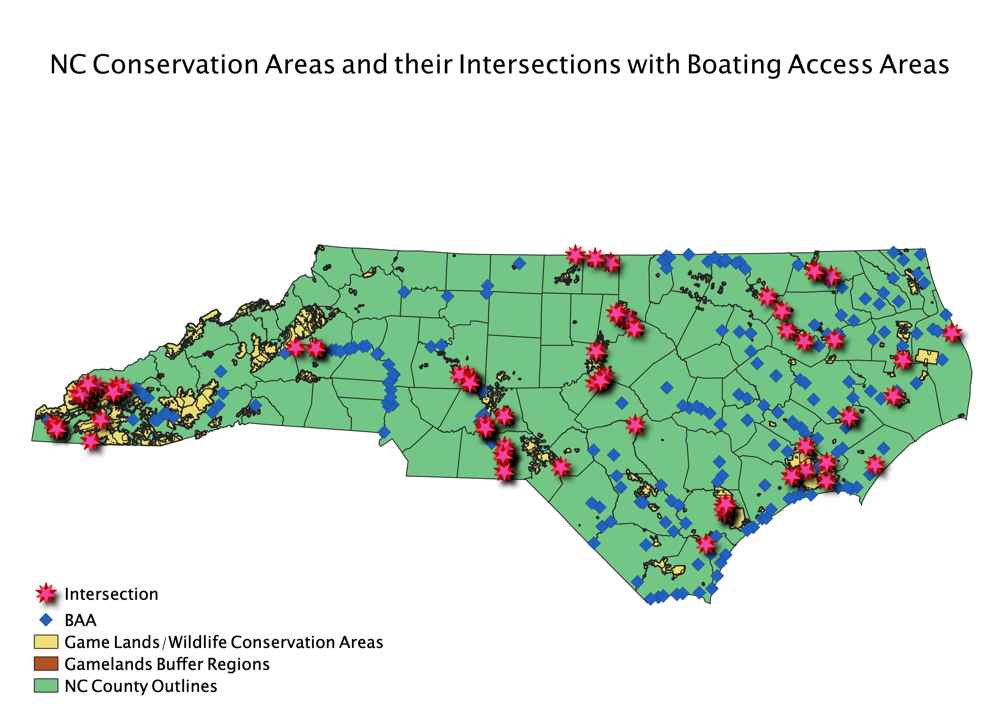

Homework 10: Geoprocessing Analysis
Leah Nelson
Answering a Real-World Question using Geoprocessing Tools
Question: How many Boating Access Areas (BAAs) are found within Gameland or Wildlife Refuge Areas?
Map of NC Gamelands and their Boundaries as well as Boating Access Areas and their Intersections.

Data used for this project:
Link to data source
Link to Boating Access Areas dataset
Link to Game Lands dataset